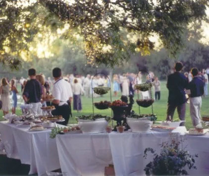
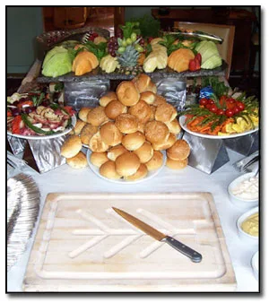
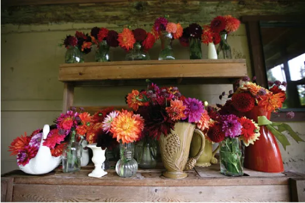

What we can do for you
We prepare a menu just for you, just for your special occasion. The ingredients are always fresh: most of our produce comes right from local growers, our seafood from day boats and free range meats raised organically.
Catering for all occasions
Small or large, we can take care of everything from set up to clean up. Unique menus are designed just for the occasion, utilizing the freshest local ingredients and made from scratch cookery.
- Weddings
- Civil Ceremonies
- Holy Days
- Christenings
- Naming Days
- Anniversaries
- Birthday Parties
- Retirement Parties
- New Year Celebrations
- Summer Solstice
- Halloween Parties
- Bonfire Night
- Christmas Parties
- Corporate Events
- Festivals
- Wakes & Funerals
- House-Warming Parties
- Parties For No Reason

Our services

Dinner parties and theme dinners
Impress your friends or that special someone.
Have your own private chef for the evening, planned dinners or luncheons for that special occasion, prepared and served in the most professional manner. We can take care of everything from set up to clean up; you just sit back and enjoy the royal treatment of Classic Caterers’ Classic Services.
Paella & theme menusFloral arrangements and unique food displays
Friends don’t let friends throw bad parties… thank you for your referrals and all the good words. Thank you!
Plan your event